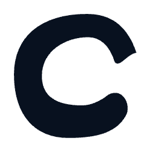
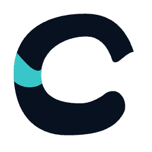
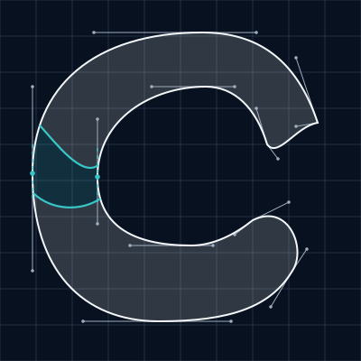

Direction 03
Organic Balance
A broad upper arc and a fuller, lower-set return create a deliberately asymmetric C. The counter drifts within the outer contour, and the confluence bends into that changing weight.
Monochrome / pure white

Navbar · 36px mark box · Inter 600 / 425
Cool white + aqua
Navbar · 36px mark box · Inter 600 / 425
Monochrome / pure navy

Navbar · 36px mark box · Inter 600 / 425
Navy + aqua

Navbar · 36px mark box · Inter 600 / 425
Two origins. One continuous C.
A broad upper arc and a fuller, lower-set return create a deliberately asymmetric C. The counter drifts within the outer contour, and the confluence bends into that changing weight. The upper and lower source forms overlap along the spine. Aqua is their actual shared region, bounded by curves.
Construction controls and curved overlap

Geometry is drawn directly as SVG paths. No typeface glyph is used for the mark. The supporting wordmark stays consistent across the three directions.
Secondary 16 / 24px reference
These are direct reductions of the primary mark. They are not the Micro C. After the primary is approved, its micro version may simplify the curves, opening and color.
Pure black / primary silhouette
Navbar · 36px mark box · Inter 600 / 425
Download primary sources
- white: mark SVG · navbar SVG · 256px PNG
- navy: mark SVG · navbar SVG · 256px PNG
- black: mark SVG · navbar SVG · 256px PNG
- primary: mark SVG · navbar SVG · 256px PNG
- light: mark SVG · navbar SVG · 256px PNG